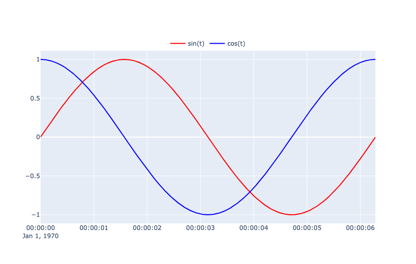
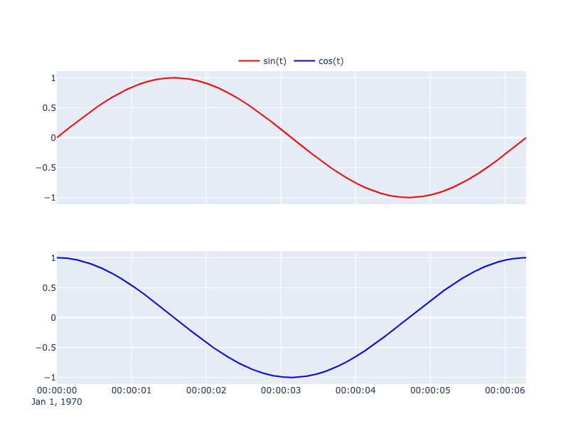
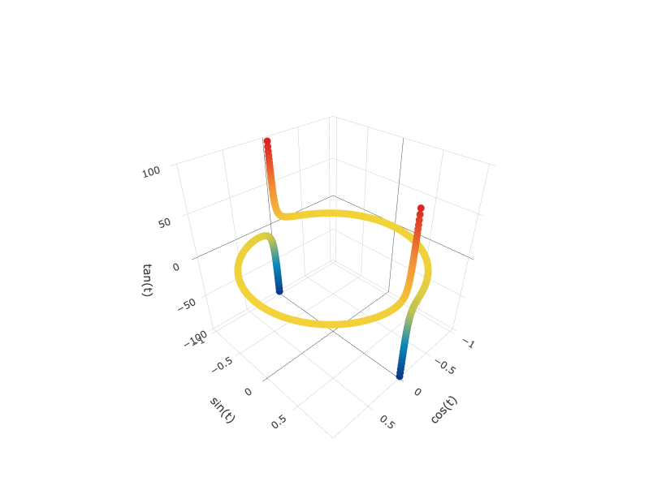

Interactive web graphics for R built on plotly.js. plotly.core is a rendering engine supporting the plotly R package and experimental plotly.express R package and can also be used stand-alone.
- Faster plots, less browser memory plotly.core leverages advances in plotly.js to improve browser rendering performance, and implements optimizations to on the R backend to cut down plot generation time and size in memory. Rendering large time series plots and heatmaps is 10-100x faster. DateTime optimizations and support for single precision floats allows up to 2x reduction of browser memory. (See the render-performance vignette for more details)
-
Machine-generated code and documentation from the plotly.js schema. Every object in the schema has a machine-generated
go_*()constructor with exactly its properties: traces (go_scatter()), the layout, objects shared across the schema (go_font(),go_colorbar(), …) and every other nested object (go_scatter_marker(),go_xaxis(),go_sankey_link(), …), with comprehensive R documentation and thorough validation generated from the schema. Future changes to the plotly.js schema can be ported to the R implementation without hand-writing any R code or documentation. -
Full backwards compatibility with the plotly R package. plotly’s
plot_ly()andggplotly()plots are rendered by plotly.core, so existing plotly R code gets the same performance work and plotly.js version. (Working branch: msummersgill/plotly@plotly-core-render) Helper functions in the plotly package back-port functionality for features and behavior deprecated between the last CRAN release plotly.js/2.25.2 and plotly-js/latest -
Shiny, R Markdown, Quarto, and static image export
plotlyOutput()/renderPlotly(),event_data()andplotlyProxy()work as in the plotly R package; figures render inline in documents, as static images in PDF/Word output.save_image()exports PNG, JPEG, WebP, SVG, PDF and EPS with headless Chrome (no Python needed).
Installation
plotly.core has not been submitted to CRAN yet. Install the development version from GitHub with remotes.
# install.packages("remotes")
# plotly.core
remotes::install_github("msummersgill/plotly.R.core")
# plotly with plotly.core rendering
remotes::install_github("msummersgill/plotly@plotly-core-render")Graph Objects
Every element in the plotly.js schema has a corresponding go_*() S3 class and constructor that validates all properties.
- A new top level graph object -
go_figureis generated by methodgo_figure() - Each trace type and layout object has an S3 class
go_scatter(),go_bar(), …,go_layout(); - Line and Marker objects support different parameters for each trace type and get a dedicated constructor for each trace type:
go_scatter_line(),go_scatter_marker(),go_scatter_marker_line() - Objects used in multiple trace types or layout objects have shared constructors:
go_colorbar(),gofont,go_scene_axis()… - Named lists work wherever a constructor does (
marker = list(size = 12)) for backwards compatibility. - One-sided formulas such as
color = ~cylare kept by constructors and evaluated in the figure’s data when the trace is added:
mtcars |>
go_figure() |>
add_bar(x = ~factor(cyl), y = ~mpg,
marker = go_bar_marker(color = ~hp,
line = go_bar_marker_line(width = 1)),
textfont = go_font(size = 14)) |>
update_layout(xaxis = go_xaxis(title = "Cylinders"))Validation
Every property is checked against the plotly.js schema, so typos or incorrect parameters are surfaced with helpful error messages.
Unsupported value for a valid property lists supported options:
go_scatter(x = mtcars$wt, y = mtcars$mpg, mode = "dots")
#> Error: Invalid value of type 'character' received for the 'mode' property of scatter
#> Received value: "dots"
#>
#> The 'mode' property is a flaglist and may be specified as a string containing:
#> - Any combination of "lines", "markers", "text" joined with '+' characters (e.g. 'lines+markers')
#> OR exactly one of "none"Wrong graph object provided gives a hint for the expected object:
go_bar(x = mtcars$cyl, y = mtcars$mpg, marker = go_font(size = 3))
#> Error: A go_font() object can't be used for bar.marker: use go_bar_marker()Invalid property names throw an error with list of all the properties supported by schema:
go_font(foo = "bar")
#> Error: Invalid property specified for go_font(): 'foo'
#>
#> Valid properties:
#> color, family, lineposition, shadow, size, style, textcase, variant, weightInvalid properties are dropped from legacy plotly figures with a warning. (Legacy plotly R backend rendered with no warning)
plotly::plot_ly() |>
plotly::add_markers(x = 1, y = 1, mode = "markers", marker = list(foo = "bar"))
#> Warning message:
#> Invalid property specified for scatter.marker: 'foo'
#>
#> Valid properties:
#> angle, angleref, autocolorscale, cauto, cmax, cmid, cmin, color, coloraxis, colorbar,
#> colorscale, gradient, line, maxdisplayed, opacity, reversescale, showscale, size,
#> sizemin, sizemode, sizeref, standoff, symbol
#> (invalid attributes are ignored) Examples
Generate some data for plotting, store in a data.table. plotly.core supports any data format that inherits data.frame, (i.e. data.table, tibble) and trace values can also be defined by vectors. For heatmaps and other three-dimensional traces, a matrix is used.
library(plotly.core)
library(data.table)
DT <- data.table(t = seq.POSIXt(from = as.POSIXct(0, tz = "UTC"),
to = as.POSIXct(2 * pi, tz = "UTC"),
length.out = 10000))
DT[, sin := sin(as.numeric(t))]
DT[, cos := cos(as.numeric(t))]
DT[, tan := tan(as.numeric(t))]Basic x-y plot
DT |>
go_figure() |>
add_scatter(x = ~t, y = ~sin, name = "sin(t)",
mode = "lines", line = go_scatter_line(color = "red")) |>
add_scatter(x = ~t, y = ~cos, name = "cos(t)",
mode = "lines", line = go_scatter_line(color = "blue")) |>
update_layout(legend = go_legend(orientation = "h",
x = 0.5, xanchor = "center",
y = 1, yanchor = "bottom"))
Subplots with Shared Axis
make_subplots(rows = 2, shared_xaxes = TRUE, vertical_spacing = 0.05) |>
add_scatter(row = 1, col = 1, mode = "lines",
data = DT, x = ~ t, y = ~ sin, name = "sin(t)",
line = go_scatter_line(color = "red")) |>
add_scatter(row = 2, col = 1, mode = "lines",
data = DT, x = ~ t, y = ~ cos, name = "cos(t)",
line = go_scatter_line(color = "blue")) |>
update_layout(legend = go_legend(orientation = "h",
x = 0.5, xanchor = "center",
y = 1, yanchor = "bottom"))
3D scatter plot
DT |>
go_figure() |>
add_scatter3d(x = ~ cos, y = ~ sin, z = ~ tan,
mode = "markers",
marker = go_scatter3d_marker(size = 5,
color = ~ tan,
cmin = -100, cmax = 100,
colorscale = "Portland")) |>
update_scenes(xaxis = go_scene_axis(title = "cos(t)"),
yaxis = go_scene_axis(title = "sin(t)"),
zaxis = go_scene_axis(title = "tan(t)", range = c(-100, 100)),
camera = go_scene_camera(eye = go_scene_camera_eye(x = 1.6,
y = 1.6,
z = 0.8)))
Shiny
library(shiny)
ui <- fluidPage(plotlyOutput("plot"), verbatimTextOutput("click"))
server <- function(input, output, session) {
output$plot <- renderPlotly(
iris |> go_figure() |> add_scatter(x = ~Sepal.Width, y = ~Sepal.Length, mode = "markers")
)
output$click <- renderPrint(event_data("plotly_click"))
}
shinyApp(ui, server)plotlyProxy() and plotlyProxyInvoke() update a rendered plot (e.g. "extendTraces", "relayout") without redrawing it.
Static images
# uses headless Chrome via chromote; offers to download Chrome Headless Shell
# if no browser is installed
save_image(fig, "figure.png", width = 800, height = 500, scale = 2)
save_image(fig, "figure.pdf")
save_image(fig, "figure.eps") # needs the rsvg packageIn R Markdown and Quarto, figures in PDF or Word output are included as static images automatically when Chrome is available.
Existing plotly R code
The plotly package’s plot_ly(), add_*(), layout(), subplot(), highlight() and ggplotly() are built on plotly.core: plotly converts its plots to plotly.core figures and renders them with plotly.core’s widget. The extension points it uses are S3 generics here (add_trace(), the add_<trace type>() functions, as_widget() and config()), plus get_validator() and set_last_plot().
Development
Code in this repository was generated by an LLM (Claude) directed to follow the directory structure of plotly.py and test support and backwards compatibility with the R plotly package. C code leverages optimizations pioneered in data.table::fwrite/data.table::fread. Authors of the “inspiration” code are included as contributors to this package as such.
Code generation follows plotly.py’s commands.py and codegen/:
Rscript commands.R updateplotlyjs # bundle the latest plotly.js from npm
Rscript commands.R codegen # regenerate validators, go_*() constructors and figure functions
Rscript -e 'roxygen2::roxygenise()' # rebuild documentation
R CMD build . && R CMD check --as-cran plotly.core_*.tar.gzGenerated files (R/zz-gen-*.R, R/sysdata.rda) are committed and must not be edited by hand. Tests are plain R scripts in tests/.